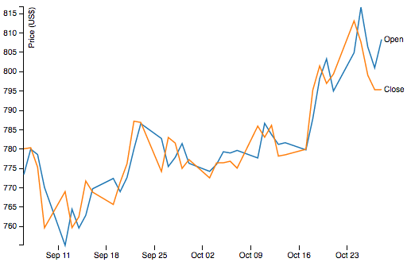
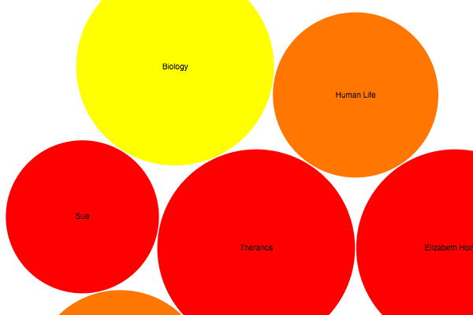

Welcome to Stock Analysis Tool
Visual Stock Analysis is a software tool that helps traders with analysis by providing more insight from various visualization. The analysis will be split into technical analysis and social(fundamental) analysis.
In Technical Analysis tab to query for the open, close, low, high prices of stock as well as ratios of the stock.

In Social Analysis tab to perform sentiment analysis of given keyword.

Finally, you can go to Correlation Analysis tab to check the correlation between two different stocks.